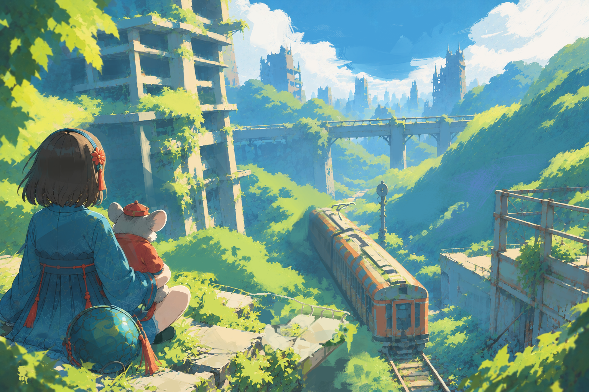

在遺留下來的城市與重新生長的生命之間，探索艾菲拉的地景、律動與記憶。
古老文明留下城市與設施，而新的菌類生命與居民在其間延續日常。魔素、靈律與菌網交織出艾菲拉獨特的生態。選擇一個入口，從這裡開始認識這片土地。
艾菲拉、白域、魔素與四種基礎靈律。
縮放探索聚落、遺構、聖樹與菌網。
認識生活於不同地區的居民與主要人物。
孢靈、菌精、菌王及巨大的生命系統。
不同群體的生活、研究、職業與守護。
跨越時代的城市、古代技術與高地走廊。